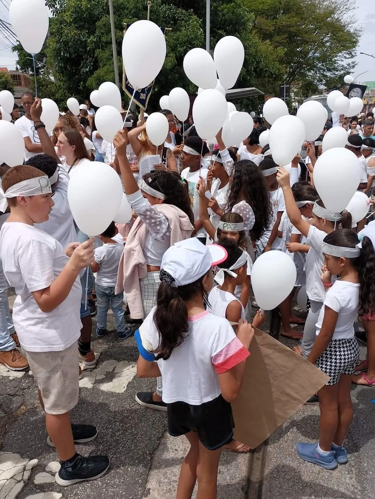
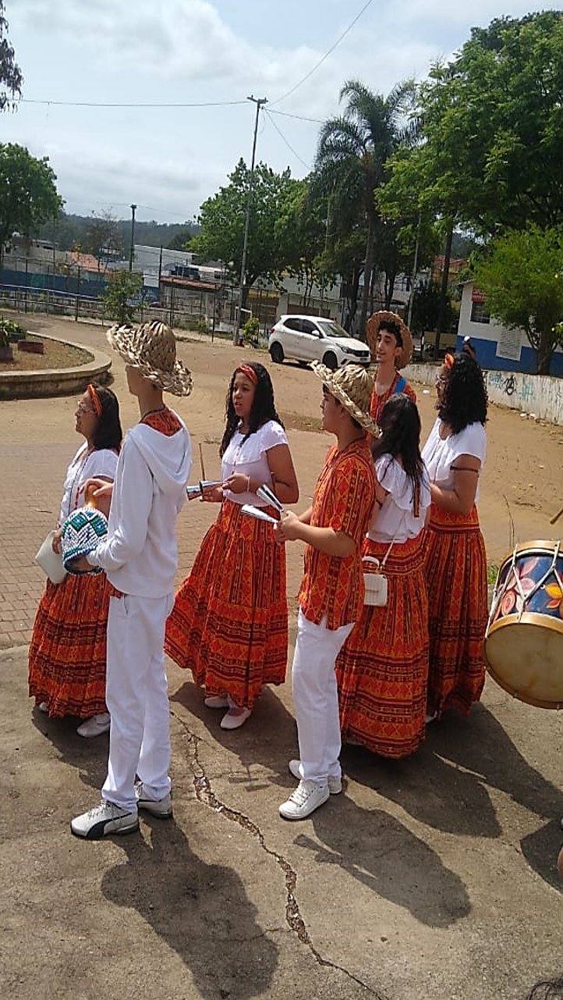

Crianças
Jovens

Espaços Religiosos

Em 2025, com o tema "Por uma cultura da paz e pela Ecologia Integral", a
Caminhada da Paz é um encontro organizado anualmente, com o objetivo de promover a paz em nossa região.
Realizado na Zona Leste de São Paulo, na região do Jardim IV Centenário, o evento conta com a
presença de toda a comunidade local para a promoção da paz, contando com intervenções artísticas,
culturais, religiosas e musicais, que reforçam a união e a paz entre todos, independente de cor,
religião, orientação sexual, idade ou sexo.